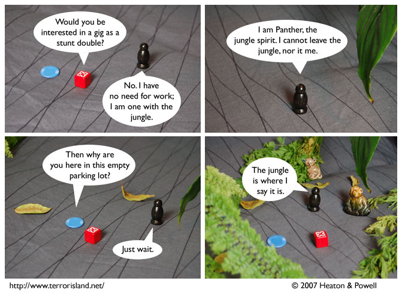

Strip #232
— Wednesday, December 5, 2007
This is why there is never any parking available in Geography City.
Notes, Thoughts, &c.
Ben’s Notes
This comic is a metaphor for how jungle spirits aren’t very useful when you want a stunt double, even though you’d think they’d be great at it.
Lewis’s Notes
Today’s comic was almost a very intellectual high-brow joke about Upton Sinclair, but Ben nixed that idea because he wanted something more “slapstick.”